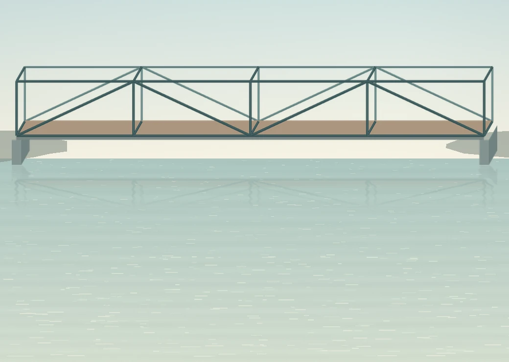

Bridge tabletop lab
Point your phone at the bridge on this screen, then lower one target and watch the phone measure the change.


Point your phone at the bridge on this screen, then lower one target and watch the phone measure the change.
